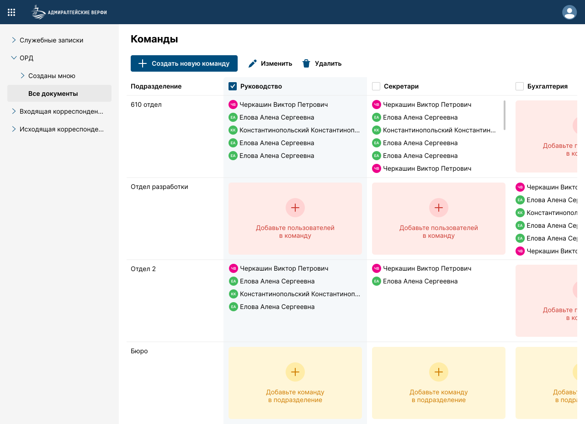
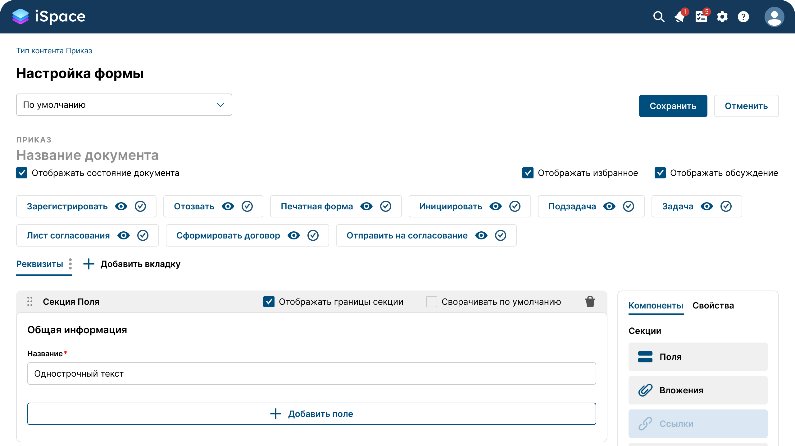

← Все кейсы
Контек · Enterprise
iSpace
Enterprise-платформа для документов, задач и совместной работы, которую компании настраивают под свои процессы
РольПродуктовый дизайнер
ПериодНоябрь 2022 — март 2025
ПродуктECM/BPM · Low-code



Большая платформа, в которой сложные процессы должны оставаться понятными
- Вклад
- Документ проходит весь путь: карточка, вложения, согласование, подписание, версии и история
- Задачи: постановка, делегирование, перенос сроков, подтверждение результата, просроченные и отменённые
- Роли и доступы: группы, замещения, оргструктура, действия зависят от роли и состояния объекта
- Вела свои задачи от требований до прототипа и релиза вместе с аналитиками и разработчиками
- Результат
- Конструкторы, в которых администратор сам собирает формы, списки и корпоративные страницы
- Таблицы с фильтрами, массовыми действиями и поиском по метаданным для больших объёмов данных
- Единая дизайн-система платформы: формы, таблицы, карточки, статусы, системные сообщения
Документооборот
Проектировала путь от создания карточки и добавления вложений до согласования, подписания и просмотра истории изменений. Учитывала связанные задачи, обсуждения и версии документа.

Дизайн-система
Создавала и развивала компоненты форм, таблиц, карточек и фильтров. Вместе с командой вырабатывала общие паттерны для статусов, системных сообщений и выбора сотрудников, чтобы они одинаково работали в разных разделах.